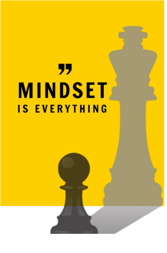
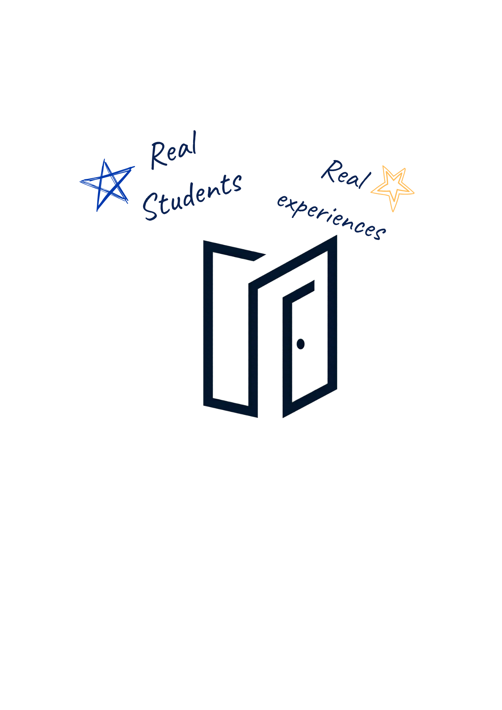

01 / 03
OUR STREAM IDENTITY
Relief, energy, and a safe place to learn
We want students to feel relieved and confident when they return to our stream for practical examples and realistic ways to manage academic and everyday stress.

LIFE LABS 10 • GROUP 1 • PODCAST
A reminder to pause, reflect, and take care of yourself. Explore practical ways to manage academic pressure and everyday stress.
Explore Our ProjectSTORY TIME!
ABOUT RE:MIND
Our chosen streaming content is a podcast about how students can build a mindset that handles stress and helps prevent burnout.
The podcast focuses on common problems students experience, such as school pressure, heavy workloads, lack of sleep, time management, perfectionism, and fear of failure.
Instead of only talking about stress, our podcast also gives simple and realistic ways to handle it and take better care of ourselves.
Podcast
YouTube
Stress & Burnout
“Re:” represents reconnecting with yourself and rebuilding your mindset after difficult moments. Re:Mind reminds us that rest is important, mistakes are okay, asking for help is okay, and our well-being matters.
What you need to know more than these
01 / 03
OUR STREAM IDENTITY
We want students to feel relieved and confident when they return to our stream for practical examples and realistic ways to manage academic and everyday stress.

THE MINDSET EPISODE
A healthy mindset does not mean being positive every moment. It means making room for difficult feelings while remembering that one hard day, grade, or mistake does not define your whole story.
When school pressure builds up, pause and name what is making the day feel heavy. Breaking one large task into smaller steps can make it easier to begin, and taking a short rest can help you return with more energy.
Students deserve support, not just more pressure to keep going. Talking with someone you trust, asking a teacher for help, and setting realistic goals are practical ways to care for your wellbeing.
YOUTUBE CHANNEL & EPISODES


OUR CHANNEL
We’re creating a welcoming place for honest conversations about school pressure, everyday stress, and small steps that help.
Channel link
Continue to Re:MindOUR STREAM OUTLINE
| Time | Topic | Activity | Time allotment | Screen | Audio |
|---|---|---|---|---|---|
| 3:00–3:05 PM | Introduction | Welcome viewers, introduce the hosts and topic | 5 min | Host introduction slide | Opening music |
| 3:05–3:25 PM | Handling Stress | “Guilty or Not Guilty?” stories and practical stress strategies | 20 min | Topic prompts and story cards | Host discussion |
| 3:25–3:30 PM | Closing and Takeaways | Share reminders, thank viewers, and close the stream | 5 min | Closing slide | Closing music |
EXPLORE THE PROJECT
Explore the details behind our audience, website, tools, and goals.
TARGET AUDIENCE
Our main audience is students who deal with academic and everyday stress.
Students dealing with schoolwork, projects, deadlines, exams, and pressure from school.
Students balancing heavier workloads, responsibilities, activities, and preparation for college.
Students managing academics, time, responsibilities, and other sources of pressure.
They need simple advice, realistic strategies, healthier study habits, enough rest, and reassurance that asking for help is okay.
VIEWER NEEDS
Viewers should learn something useful from the content.
The presentation should stay interesting instead of feeling like another school lecture.
Viewers should feel involved and interested in the discussion.
The topic should connect to situations students actually experience.
Information should come from reliable research and sources.
Ideas should be explained using clear and simple words.
Podcasts are useful for discussing topics, sharing experiences, explaining ideas, and hearing different opinions.
OUR SETUP
We chose YouTube because it is easy to use, accessible, and widely used by students and young people.
A microphone helps make the speakers easier to hear during the podcast.
A computer can be used for recording, editing, organizing, and preparing the content.
A phone or camera can be used to record the video part of the podcast.
Headphones can help check the audio quality before publishing the stream.
A stable internet connection is important when uploading or streaming content online.
OUR RESEARCH JOURNEY
Our group looked at different formats like podcasts, educational videos, and Q&A, as well as platforms such as YouTube, Facebook, TikTok, and Twitch.
We chose YouTube because it is easy to use, accessible, and widely used by students and young people.
We also thought about our target audience and what kind of content they would enjoy, especially something useful, easy to understand, and relatable.
We learned that a good stream should have clear audio and video, reliable information, an organized presentation, and good audience interaction.
At first, we considered making entertainment or educational content, but after discussing our ideas, we decided to combine both.
We chose to create a podcast about how to build a mindset that can handle stress and prevent burnout because it is a topic that students can relate to.
Through our discussions and teamwork, we were able to choose a topic that we think can be both interesting and helpful to our viewers.
WEBSITE WALKTHROUGH
HTML organizes the website. It creates the headings, paragraphs, buttons, cards, sections, images, and links.
CSS controls the colors, spacing, fonts, layout, cards, buttons, backgrounds, and responsive design.
JavaScript makes the website interactive. We used it for the theme switch, Website Tip toggle, and Back to Top button.
WEBSITE FEATURE
Our website uses sections, cards, buttons, colors, and an organized navigation bar to make the information easier to explore.
Keep important information short, clear, and easy to find.
OUR FUTURE PLANS
We want our content to give students advice that they can actually use in their daily lives.
We want to improve our speaking, recording, editing, and audience interaction skills.
In the future, we hope the podcast can reach more students who may relate to the topic.
We want to continue learning about streaming, content creation, and responsible use of online platforms.
FINAL TAKEAWAY
Stress is something students experience, but it does not have to control your everyday life.

Building a healthy mindset means knowing when to focus, when to rest, and when to ask for help. Small changes in daily habits can make difficult tasks feel more manageable.
.png)